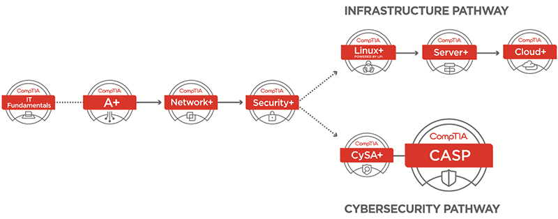

PINCHE AQUÍ PARA VOLVER ATRÁS
¿POR QUÉ ES IMPORTANTE TENER CERTIFICADOS?

Una certificación demuestra un compromiso con los estándares superiores de la industria y el aprendizaje
continuo. Estos valores pueden ayudar a una empresa a aumentar su credibilidad y prestigio profesional dentro de
su propia red, con sus clientes actuales y al buscar nuevas oportunidades de negocios o proyectos.